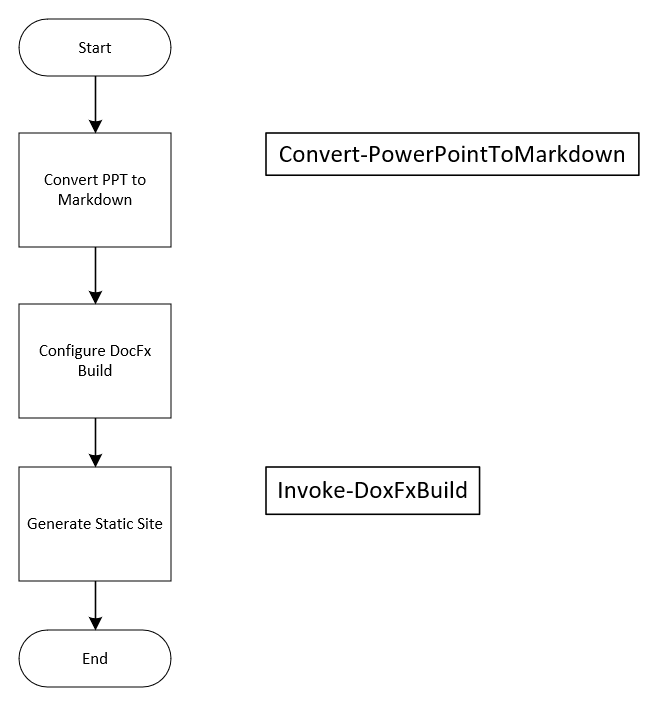
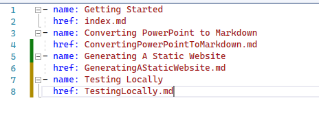
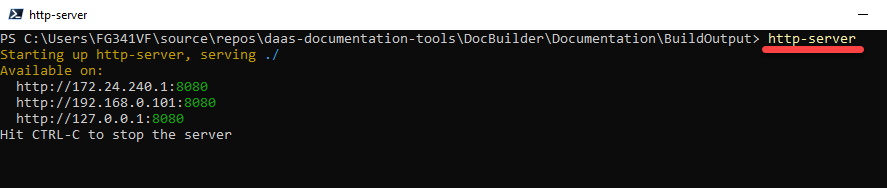
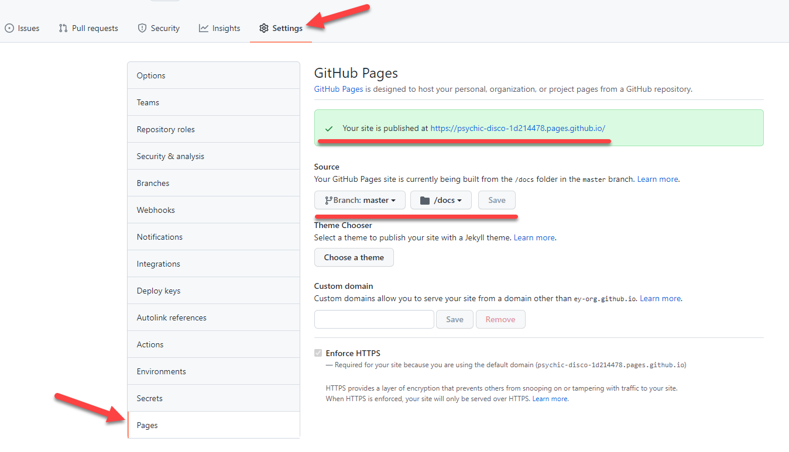

Getting Started
Prerequisites
DocFx
- See Getting Started with DocFX | DocFX website
- DocFX is an API documentation generator for .NET, which currently supports C#, VB, and F#. It generates API reference documentation from triple-slash comments in your source code. It also allows you to use Markdown files to create additional topics such as tutorials and how-tos, and to customize the generated reference documentation.
- Chocolatey:
choco install docfx -y - Homebrew (owned by the community):
brew install docfx - GitHub: Download and unzip docfx.zip from GitHub DocFX releases, extract it to a local folder, and add it to PATH so you can run it anywhere.
- NuGet:
nuget install docfx.console.docfx.exeis under folderdocfx.console/tools/
DocBuilder PowerShell module
- Located in the same GitHub repo as this documentation, ey-org/daas-documentation-tools
- Clone the repo
- Run
LoadModule.ps1in your favorite (.NET Framework-based) PowerShell host to load the module - Note: This module depends on GDI+, which does not exist in all host types, even on Windows
The sample script used to build this site is here: daas-documentation-tools\DocBuilder\Documentation\BuildDocs.ps1
Building the Static Web Site
Basic Process

Notes
- You can use the BuildOutput folder in the same way this repo does as the source for GitHub pages
- You can split the basic processes into smaller steps if you want to edit the markdown generated from PPTX
- Generate the markdown to a different location
- Edit as desired and copy into StaticContent using the best process for your project
- Generate the static website
Converting PowerPoint to Markdown
About the DocBuilder PowerShell Module
First, ensure you have the module loaded, as described in the Getting Started section.
PowerPoint File Conversion
- To convert PowerPoint files to Markdown, use the
Convert-PowerPointToMarkdowncmdlet provided by the DocBuilder PowerShell module. Example usage:
Convert-PowerPointToMarkdown -InputFile "path o\your\presentation.pptx" -OutputDirectory "path o\output"
Converting PowerShell Module to Markdown
Preparing Your Module
- Ensure your PowerShell module is well-documented with appropriate comments.
- Use the
Export-ModuleMembercmdlet to explicitly export functions and aliases that you want to include in the documentation.
Generating Markdown
- Use the
Convert-PowerShellToMarkdowncmdlet from the DocBuilder PowerShell module. Example usage:
Convert-PowerShellToMarkdown -ModuleName "YourModuleName" -OutputDirectory "path o\output"
Generating A Static Website
Setting Up the Environment
- Ensure you have all prerequisites installed, as mentioned in the Getting Started section.
Building the Website
- Run the
BuildDocs.ps1script to generate the static website. Example usage:
.\BuildDocs.ps1
Configuration
- Customize the
docfx.jsonfile to suit your project's needs. Example configuration settings:
{ "metadata": [ { "src": [ { "files": [ "src/**/*.csproj" ], "cwd": "../" } ], "dest": "api" } ], "build": { "content": [ { "files": [ "articles/**.md", "toc.yml" ] } ], "resource": [ { "files": [ "images/**" ] } ], "dest": "dist" } }
Adding Topics
- When you add new topic articles or wish to change the order of the topic list, you must edit
StaticContent/topics/toc.ymlmanually.

Testing Locally
Using http-server
- After executing
BuildDocs.ps1, theBuildOutputfolder will contain a complete static website. - One recommended choice for serving content is http-server from NPM.
- Note that this option requires npm and its dependencies.

Hot Reloading
- You don’t have to stop the web server to run the build script.
- It is highly recommended to open developer tools and disable caching.
Using GitHub Pages
Setup

Updating the Site
- Copy the contents of the
BuildOutputfolder to /docs and update the master branch with a Pull Request. - Wait a moment for the site to update.